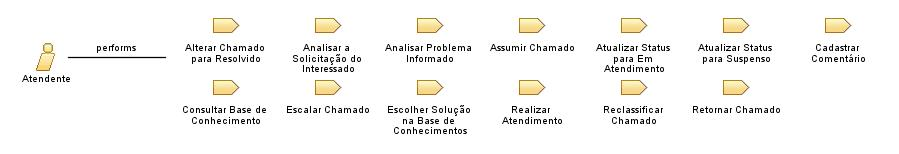

Role: Atendente
Servidor, estagiário ou bolsista do IFRN membro de um ou mais grupos de atendimento de uma central de atendimento responsável por atender demandas técnicas de TI nos Campis ou Reitoria do instituto.
Relationships

Primary Performs
Alterar Chamado para Resolvido
Analisar a Solicitação do Interessado
Analisar Problema Informado
Assumir Chamado
Atualizar Status para Em Atendimento
Atualizar Status para Suspenso
Cadastrar Comentário
Consultar Base de Conhecimento
Escalar Chamado
Escolher Solução na Base de Conhecimentos
Realizar Atendimento
Reclassificar Chamado
Retornar Chamado
Additionally Performs
Abrir Chamado